DIY Snoopy 手作課程
做一隻只屬於自己的史努比
去東京 Snoopy 博物館別再只是走馬看花看展覽！今天帶你們解鎖連日本在地人都超難搶的隱藏版「手作專屬史努比」體驗！
有趣的 80 分鐘體驗
從一張扁扁的 Snoopy 皮開始，自己挑衣服、選項圈、塞棉花、許願放進專屬的小心臟，再帶牠去沖澡、量身高體重，最後領一張印著名字的身分證。整套療癒儀式感直接拉滿。
留言問爆的就是這堂課，所以我把那天從進門到抱著牠走出來的每一步都拍下來了。看完再決定要不要搶，包你被萌翻。
-
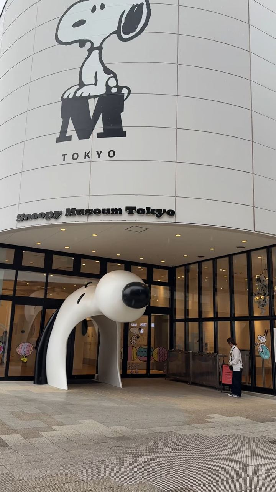
就是這個門口
從南町田グランベリーパーク站出來，順著人潮走幾分鐘就看到了。一隻巨大的史努比從門口彎下腰探出頭，像在跟每個走進來的人打招呼。
光是在這裡就拍掉十分鐘，完全不後悔。還沒進門就已經被萌到。
順帶一提，這裡是美國加州 Charles M. Schulz 博物館在全世界唯一的官方分館，不是一般的授權展覽 —— 難怪連日本人自己都很想來。
一張軟趴趴的皮，變成史努比！
-
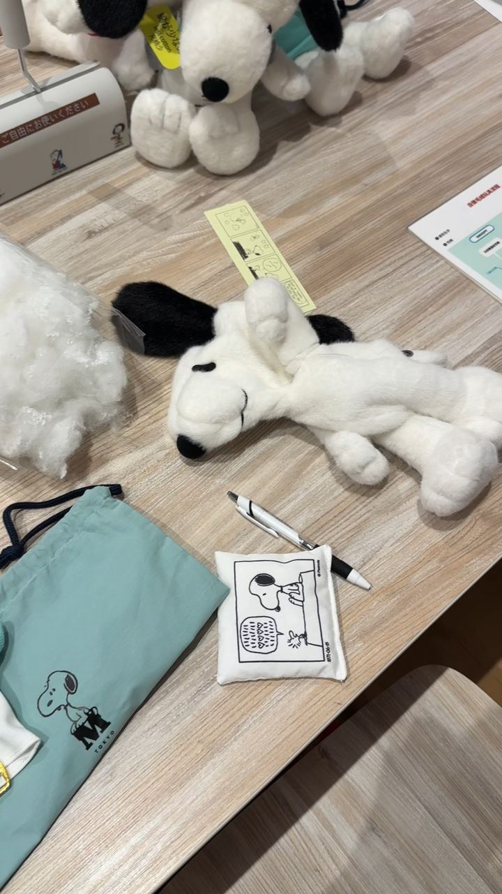
進教室，先拿到一張「皮」
坐定之後，老師發下來的第一樣東西，是一張扁扁的、軟趴趴的史努比。
沒有棉花、沒有形狀，就是一張皮。看到的當下有點好笑，也有點期待 —— 接下來的 80 分鐘，就是要把牠變成史努比。
-
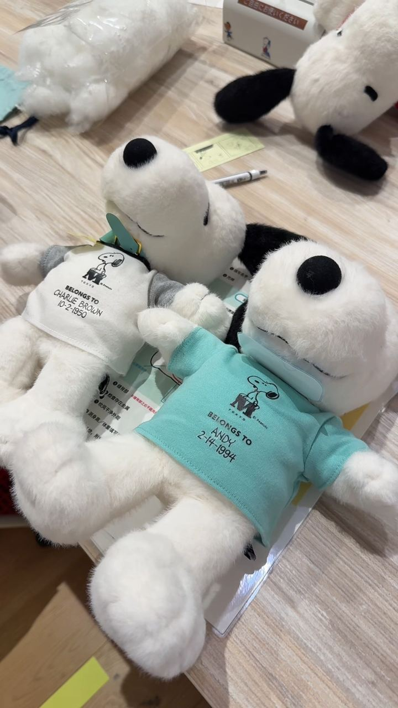
胖胖版，還是苗條版？
桌上擺著兩隻已經做好的當範本 —— 一隻圓滾滾，一隻比較修長。老師會問你想做哪一種，這個選擇會決定等一下棉花要塞多少。
同時會發一張單子，讓你寫下要印在衣服上的名字和生日。這一步要特別專心，因為印上去之後就不能重來了。
-
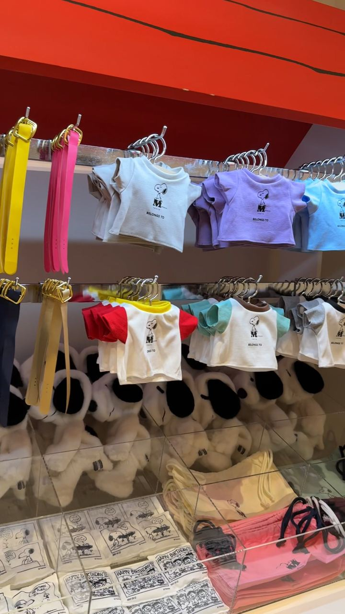
整面牆的迷你衣服
接著是最難決定的一關。整面牆掛滿了小小的 T 恤，白的、紫的、粉的、湖水綠的，旁邊還有一排一排的項圈。
每件 T 恤上都印著博物館限定的圖案和「BELONGS TO」，下面就是要印你名字的位置。
-
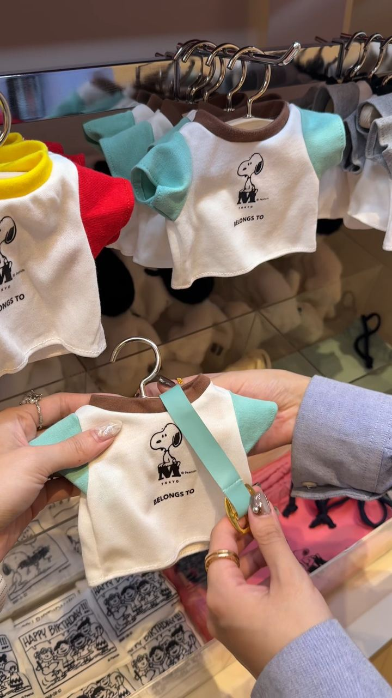
選色選了好久
衣服一個顏色、項圈一個顏色，兩個要搭。種類多到會有選擇障礙，我們在這裡站了大概五分鐘，反覆比對了好幾組。
後來發現這其實是整堂課裡最個人的一步 —— 同一場的 16 個人，最後抱出去的史努比沒有一隻是一樣的。
-
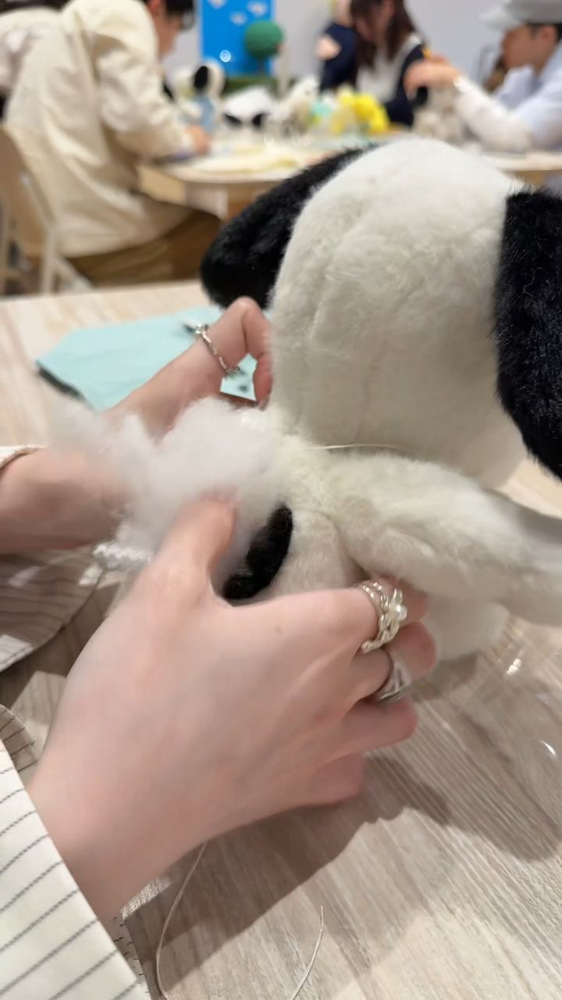
回到位子，開始填棉花
挑完顏色回到座位，重頭戲來了。一團一團的棉花往裡面塞，從鼻子、耳朵開始，慢慢往身體推。
塞得越多越紮實，形狀也越挺。想要軟軟的手感就少一點 —— 這裡沒有標準答案，做自己喜歡的就好。
-
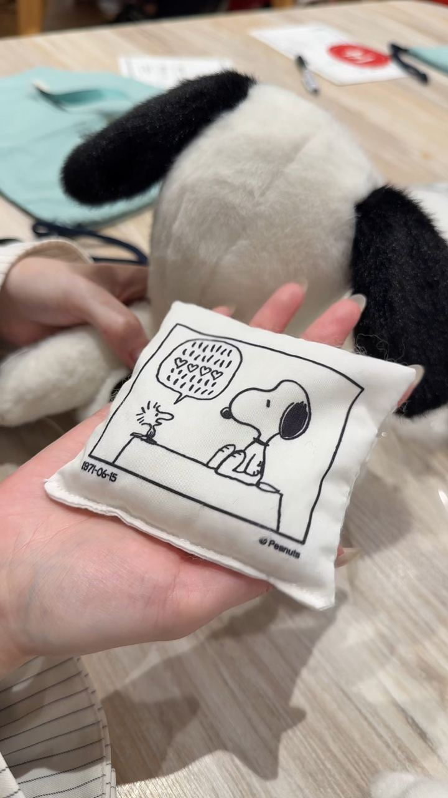
把小心臟放進去
棉花塞到一半，老師會拿出一顆小小的心，讓你放進牠的身體裡。
整堂課最有儀式感的就是這一步！可以順便許個願再放進去。放下去的那一刻真的會有種「牠要活過來了」的感覺 —— 聽起來很浮誇，但當下就是會這樣覺得。
-
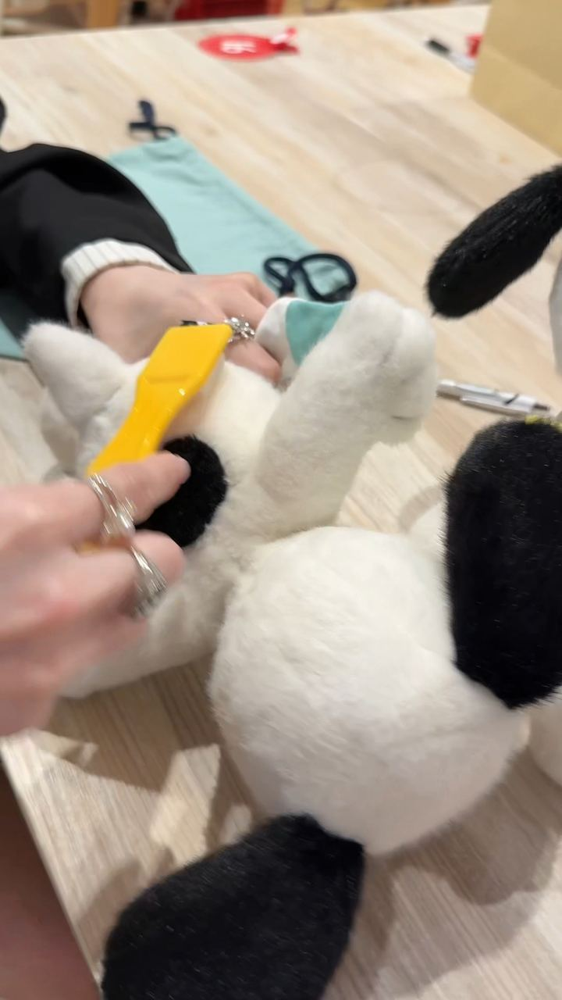
刷蓬，牠就精神了
縫好之後拿刷子，把表面的毛順著刷開刷蓬。
這一步的變化很明顯 —— 刷之前是一隻有點扁塌的娃娃，刷完整個蓬起來，看起來就是店裡在賣的那種質感。
-
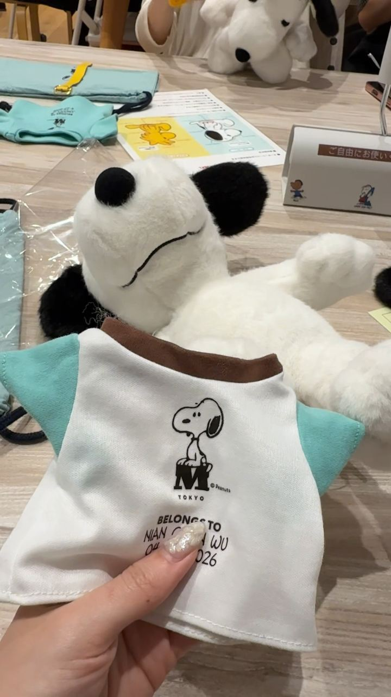
衣服印好了，穿上
刷完毛的時候，剛才填的名字已經印在 T 恤上了。
把衣服套上去、項圈扣好，牠就從「一隻史努比」變成「我的史努比」。這個轉變比想像中有感。
最後這幾步，是整堂課最可愛的地方
做完不是就結束了。接下來的流程，才是讓人覺得「這錢花得值得」的部分。
-
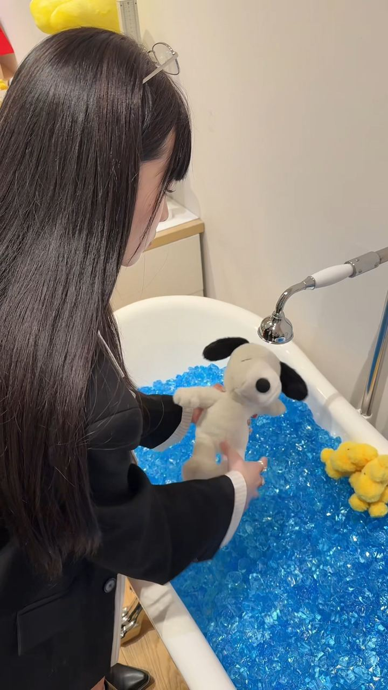
帶牠去「洗澡」
旁邊有一個小小的空間，可以把做好的史努比放進去吹一吹，把表面的棉絮和碎屑吹掉。
功能上就是除塵，但他們把它做成一個迷你淋浴間，還叫你帶牠去「沖澡澡」。這種小地方的用心，是整個體驗最加分的部分。
-
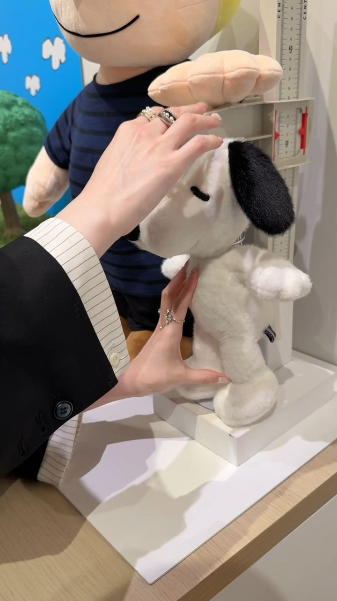
量身高、量體重
洗完澡去量身高體重。真的有一台小磅秤和一支量尺，像在幫新生兒做健康檢查一樣。
我們家這隻量出來是 31 公分、274 公克。因為每個人塞的棉花不一樣，所以每一隻的數字都不同，這也是為什麼要量。
-
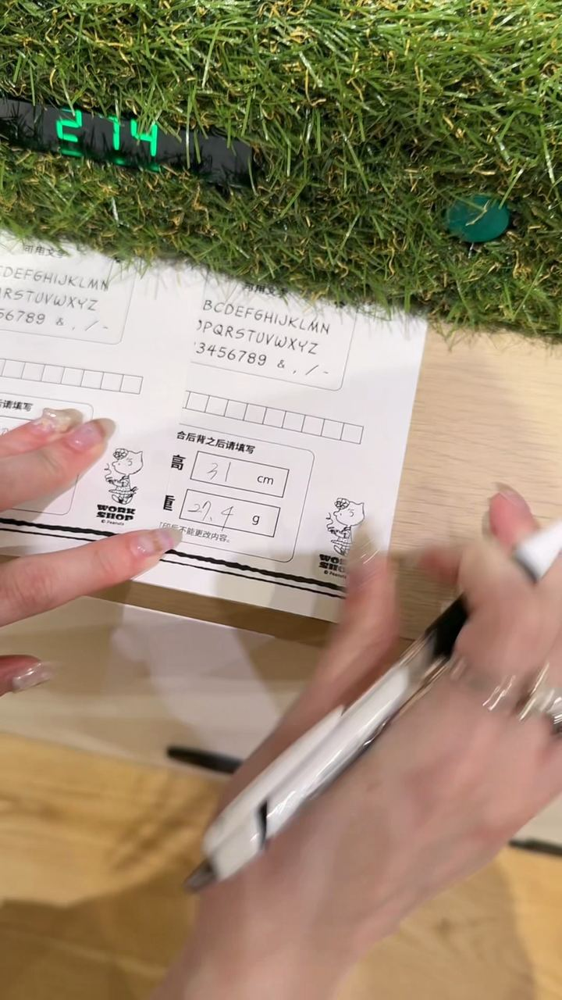
把數字寫進單子裡
量完之後，把身高、體重、還有牠的「生日」一起寫進一張單子。
寫的時候突然覺得有點好笑 —— 明明只是個娃娃，卻認真地在幫牠登記資料。但也就是這種認真，讓整件事變得很有溫度。
-
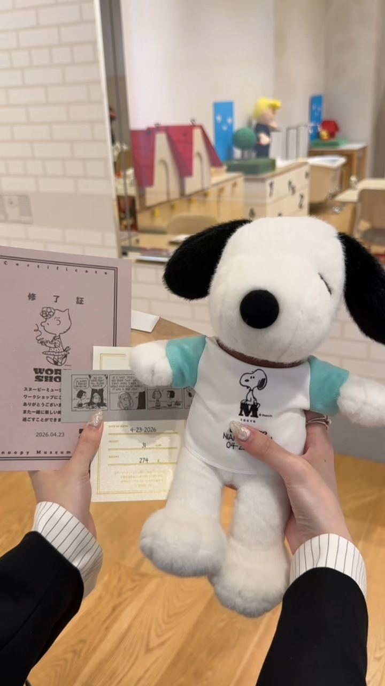
完成了
80 分鐘之後，那張軟趴趴的皮變成了這樣。
衣服上印著自己的名字和日期，項圈是自己挑的顏色，連胖瘦都是自己決定的。走出教室的時候抱著牠，感覺跟在店裡買一隻完全不一樣。
-
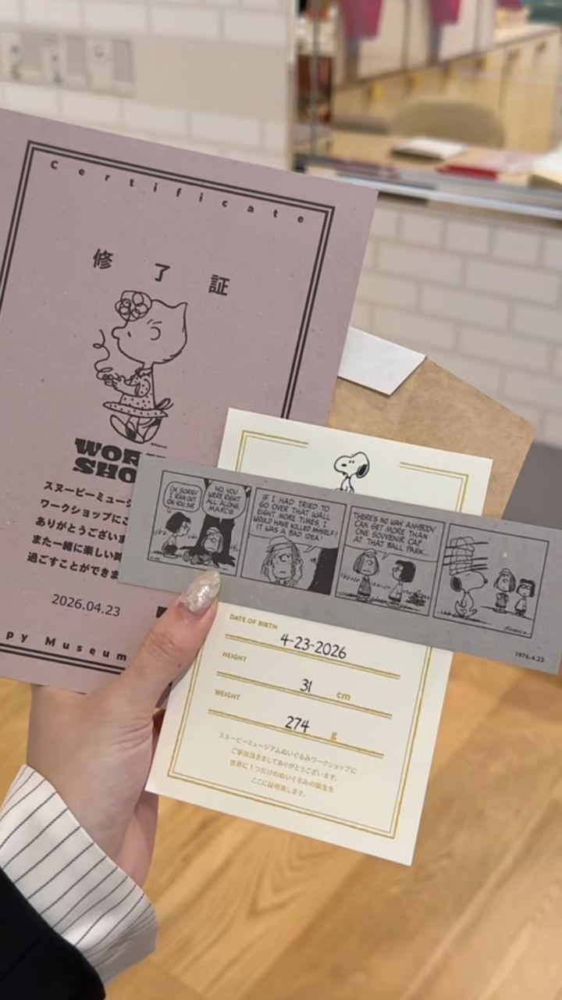
還有一張出生證明書
最後拿到的這疊東西，是我覺得最驚喜的部分。
一張出生證明書，上面寫著生日、身高 31 公分、體重 274 公克；一張粉紅色的修了證，感謝你來參加；還有一張花生漫畫。
那張漫畫是 1976 年 4 月 23 日刊出的 —— 而我們上課那天是 2026 年 4 月 23 日。整整五十年前的同一天。這個細節到現在都還讓我起雞皮疙瘩，實在太浪漫了。
做完之後，別急著走
-
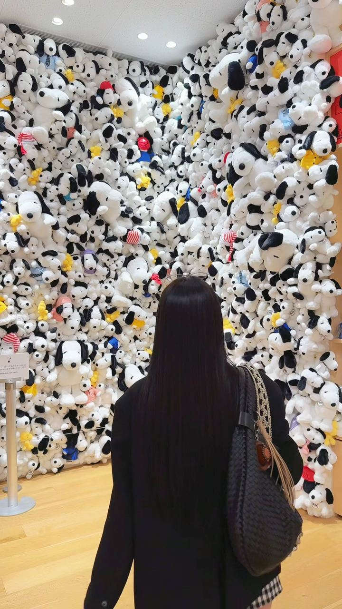
二、三樓的展區也別錯過
從入口的「大嘴巴」售票處買票之後，搭電梯上二三樓就是展區。
裡面有巨型的史努比模型、投影廳，還有一整區的原作漫畫畫作可以慢慢看。我們那天還剛好遇到限量徽章的活動。
-
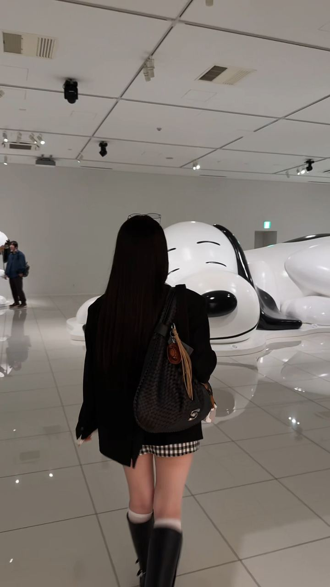
整面牆的史努比
這面牆大概是全館最好拍的地方之一。
密密麻麻全都是史努比，站在前面拍一張，怎麼拍都好看。
-
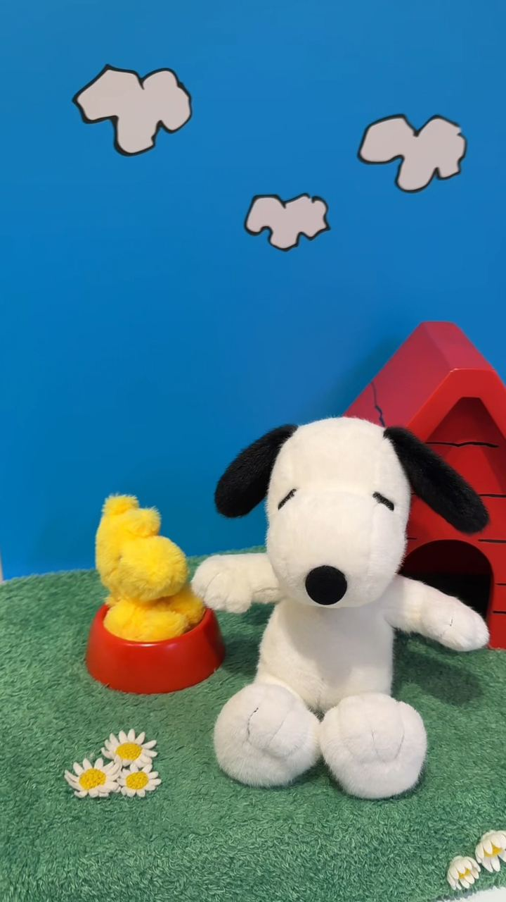
館內有一堆給娃娃拍照的場景
場館很貼心地佈置了好幾個小場景，就是讓你帶著剛做好的史努比一個一個去拍。
我們那天在這裡待了快一小時，拍到手機沒電。看到旁邊每個人都在做一樣的事，還蠻好笑的。
-
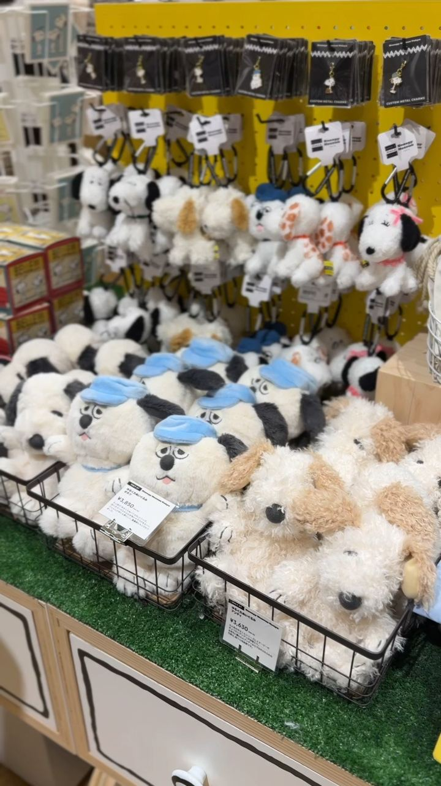
紀念品區也很難全身而退
出口的商店有不少博物館限定的商品，包含這裡才買得到的娃娃。
本來想說已經做了一隻應該夠了吧⋯⋯結果還是失守。這一區真的有破產風險，建議預留時間，也預留預算。
-
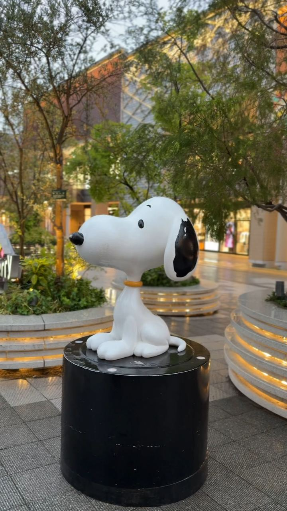
連外面都是史努比
走出博物館，整個南町田グランベリーパーク也散落著史努比的雕像和小裝置。
傍晚的時候燈亮起來特別好看，很適合在這裡結束一天。
而且 Grandberry Park 本身就是一個超大的購物中心，逛完博物館直接接著逛，一整天排在這裡完全不會無聊。
多少錢、怎麼去、怎麼預約
這堂課一定要事先預約，而且真的很難搶。下面是我們自己確認過的資訊，想直接看預約教學的話往下拉就對了。
費用
含稅，只含課程本身，入館券另計。
時間
建議前後各留一小時拍照。
名額
小學生以上才能參加。
預約
先着順，付款後不能退改。
怎麼預約？走 eplus 國際站就好
很多人卡在「沒有日本電話不能註冊」，其實 eplus 國際購票站免註冊會員，也有繁體中文介面。
完整的預約流程、開賣時間、四種課程比較、陪同票規則，我們另外整理了一篇：
地點與營業時間
- 地址：東京都町田市鶴間 3-1-4（南町田グランベリーパーク內） 開啟 Google 地圖
- 交通：東急田園都市線「南町田グランベリーパーク」站，從澀谷約 40 分鐘，出站步行可達
- 營業時間：平日 10:00–18:00（最後入場 17:30）／六日與國定假日 10:00–19:00（最後入場 18:30）
- 入館券：前售券一般・大學生 2,000 円，參加手作課程當天可用前售價購買
- 官網：SNOOPY MUSEUM TOKYO
幾個我們自己走過才知道的小提醒
① 名字和日期印上去不能重做，填單的時候務必再三確認拼字
② 選平日最後一場（16:30）的話，下課就閉館了，想逛展場要選早一點的場次，或是上課前先逛
③ 教室在展示室入口之前，所以只上課不逛館的話不用買入館券
④ 拍照時間比想像中花更多，那天我們前後待了將近四小時
順便看看
Visit Japan Web 完整教學 —— 入境前先登錄好，一個 QR Code 走完入境審查與海關申報。
2026 日本退稅新制懶人包 —— 11 月起改成機場退稅，在紀念品區失手前先搞懂。